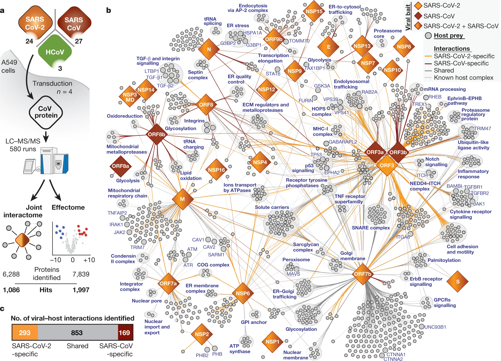
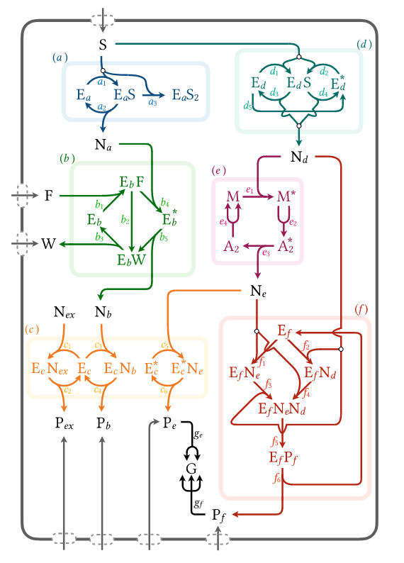
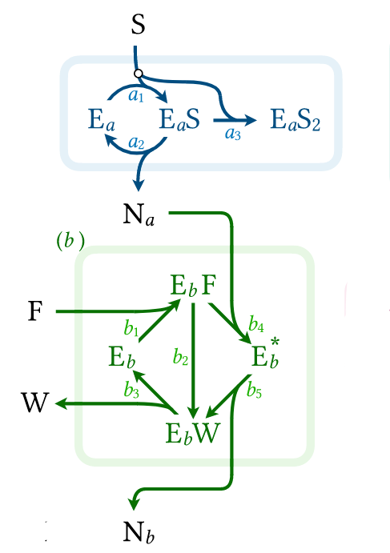

How do we understand and design complex chemical reaction networks?

Can we think about complex networks more like electrical circuits?
Why Circuits Work in Electronics:
Complex device = Combination of simpler modules
Each resistor/capacitor: characterized once
Combine using algebraic rules (Ohm's law, etc.)
Reuse components in different contextsKey Insight
Chemical networks have currents (matter flow) and forces (chemical potential differences) — just like circuits have currents and voltages
Electronic circuits: 1 conservation law (charge)
Chemical networks: N conservation laws (each species)

N Conservation Laws
Multiple species flowing simultaneously
↓
N Parallel Information Channels + Cross-Coupling via \(G_{ij}\)
Independent conserved currents + Species \(i\) drives species \(j\)
↓
Massively Parallel Processing
Concurrent computation pathways
↓
Thermodynamically Consistent Computation
Respects energy conservation and entropy production laws
↓
Energy-Efficient Computing + Self-Assembling Architecture
Approaches \(k_B T\) limit + Molecular scale organization
↓
Applications
DNA computing, biochemical oscillators, molecular pattern recognition
In a series of papers (Verley et al PRE, 2024 and 2025 )proposed a systematic coarse-graining
Each chemical module characterized by a conductance matrix \(\mathbf{G}\):
\[\text{Chemical currents} = \mathbf{G} \times \text{Chemical forces}\]
| Level | Variables | Currents | Forces |
|---|---|---|---|
| Reaction | Reaction rates \(r_\alpha\) | \(j_\alpha = r_\alpha\) | Affinities \(A_\alpha\) |
| Cycle | Cycle currents \(J_k\) | \(J_k\) (conserved) | Cycle forces \(F_k\) |
| Physical | Species concentrations \(x_i\) | Net production \(\dot{x}_i\) | Chemical potentials \(\mu_i\) |
At every level of description, the system obeys thermodynamic laws:
\[\text{Entropy production rate} = \sum_i j_i f_i \geq 0\]
where \(j_i\) = currents, \(f_i\) = thermodynamic forces (affinities)
Guarantees physical realisability
Unlike many coarse-graining methods, thermodynamic consistency is preserved at all scales — from individual reactions to full network
Key Insight: Reaction currents \(\mathbf{j}\) decompose into independent cycle currents \(\mathbf{J}\):
\[\mathbf{j} = \mathbf{C} \cdot \mathbf{J}\]
where \(\mathbf{C}\) is the cycle matrix (columns = basis cycles spanning \(\ker(\nabla_x)\))
Why This Matters
Conservation laws → Cycle structure → Conductance defined on physically meaningful currents (not arbitrary reaction rates)
Knowns:
Unknowns:
Consistency
When modules connect: entropy production of combined system = sum of entropy productions in modules + interface dissipation
Enzyme Cascade:
Module 1: S → [enzyme reactions] → Na
Module 2: Na + F → [enzyme reactions] → Nb + WTraditional Approach:
Modular Approach:

Result: Same answer, but modules are reusable (thanks to linear response)
class Module:
"""Dummy module"""
def __init__(self, reactions, internal_species, external_species):
self.G = self.calculate_conductance_matrix()
self.interfaces = external_species
def connect(self, other_module, shared_species):
return Module(self, other_module, shared_species)
def consistency(self):
...